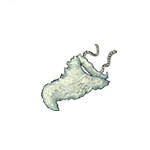
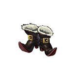
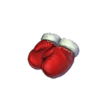
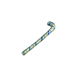

Получено: файл; исходный URL. Иллюстрация «Коллекция Деда Мороза» из каталога ViveR_9, сопоставлена по точному названию; возможны отличия версий. Оригинальный файл без перекодирования; авторство отдельно не установлено. Страница: источник.

Коллекция Деда Мороза
ВКонтакте; дата источника не указана- Тип
- Коллекции
- Версия и дата
- ВКонтакте; дата источника не указана
Элементы коллекции













Данные по источнику · ВКонтакте · дата источника не указана
Предварительно: один источник; требует сверки. Требуется сверка.
- Награда
- Вода и 500 опыта
- Где копать
- Бригада, дерево и филин
- Состав (источник Zombie-island)
- Борода из ваты; Сапоги; Рукавицы; Шапка; Посох.
- Награда (источник Zombie-island)
- 1 Вода; 500 Опыт.
- Где копать Коллекцию Деда Мороза в Зомби Ферме лопатами
- Бригада; Печка; Шатёр; Мобильный телефон; Костёр; Флаг Германии; Флаг Казахстана; Марафонец; Флаг Марафонца; Зимний папоротник; Снежная стена; Украшение; Арка; Снежный забор 4; Снежный забор 3; Снежинка; Кратер 1; Кратер 2; Снежок; Маленькая звезда; Снежный пик маленький; Снежный пик средний; Дерево и филин; Скамейка раз; Скамейка два; Фонарь два; Весенняя ваза 3; Весенняя ваза 2; Весенняя ваза 1.
- Коллекцию Деда мороза носят Кладоискатели
- Кладоискатель; Кладоискатель с мозгами.
- Коллекция Мороза выпадает из ценностей и сокровищ Зомби Фермы
- Глазной яблони; Коллекционная посылка; Коллекционный; Коллекционер; Сундук Чудовища; Сюрприз; Варежки; Носок изобилия; Вишневый торт; Новогодняя елка за дубл; Новогодняя елка за зб; Ледяной дворец за ЗБ.
- Коллекция Деда Мороза попадается при колдовании Палочками дома
- Палочка-выручалочка.
Данные по источнику · ВКонтакте, ZombieS Forever · дата редакции не установлена
Предварительно: Историческая фанатская страница; независимость от других источников не установлена. Возможны различия версий и дат.. Требуется сверка.
- Награда по ZombieS Forever
- 500 опыта и вода
- Места получения: выборка из источника
- Бригада, дерево и филин.
Данные по источнику · браузерная версия; платформа не указана · дата редакции не установлена
Предварительно: Содержимое списка: изображения и колонки могут терять смысл при извлечении текста; отдельная страница и дата не проверены. Подписи alt иногда ошибочны.. Требуется сверка.
- Текст карточки из каталога
- 500 опыта и Вода Борода из ваты Сапога Рукавицы Шапка Посох Где копать: Снеговик, Зимние декорации, Недостроенный мобильник, Недостроенная катапульта, Чучело Санты, Бригада, Дерево и филин
Данные по источнику · Мой Мир (Mail.ru); историческая таблица · дата редакции не установлена
Предварительно: Источник сам использует знаки вопроса; не следует считать такие места подтверждёнными. Возможны изменения патча и платформы; независимость от других справочников не доказана.. Требуется сверка.
- Название в источнике
- Коллекция Деда Мороза
- Где копать
- Чучело Санты, Бригада, Дерево и филин
- Награда
- 500 опыта и Вода
Данные по источнику · браузерная версия; на сайте указана игра ВКонтакте · дата редакции не установлена
Предварительно: Исторический текст; сильно совпадает со справкой Zommbie.at.ua, независимость не доказана. Отрицания и доступность могут измениться с патчем.. Требуется сверка.
- Где искать по странице «Зомбастики»
- Бригада, зимний папоротник, снежный забор.
Данные по источнику · историческая браузерная версия, платформа не указана · 10.01.2014 — дата в каталоге; дата редакции материала неизвестна
Предварительно: Фанатский список без вероятностей и уточнения площадки; независимость от других источников не установлена.. Требуется сверка.
- Где искать по списку сайта
- Бригада, зимний папоротник, снежный забор
- Оговорка
- Список может относиться к разным условиям, инструментам и периодам игры; не доказывает гарантированное выпадение. Заявления «только» и «невозможно» относятся лишь к времени и версии источника.
Данные по источнику · историческая браузерная игра; площадка не уточнена · 26.02.2013 — дата каталога; редакция неизвестна
Предварительно: Проверен текст в каталоге сайта; вероятность выпадения не указана. Исторические версии и даты могут различаться; списки и награды требуют сверки, независимость сайта от других справочников не установлена.. Требуется сверка.
- Награда в источнике
- 500 опыта и 1 вода
- Места в источнике
- Снеговик, зимние декорации, недостроенные мобильник и катапульта, чучело Санты, бригада, дерево, филин. Дата в адресе 25.02, в каталоге 26.02.
Данные по источнику · браузерная игра; социальная сеть не указана · 14.04.2015 — дата статьи; дата последних правок неизвестна
Предварительно: Фанатские источники могут быть зависимыми; сверены только отмеченные факты, вероятности и актуальность не подтверждены.. Требуется сверка.
- Посох и награда
- Автор относит Посох к коллекции Деда Мороза и указывает воду и 500 опыта за обмен; оба факта совпадают с Zombie-island.
- Где искать
- Указаны Печка, Шатёр, Костёр, Марафонец, Флаги Германии и Казахстана и другие декорации, а также мешки кладоискателей и ценности. Вероятности не указаны.
Связанные сущности
нет проверенных связей — требуется сверка.
Источники
- прочитано; проверка 2026-11-21
- прочитано: Zombie-island.moy.su; проверка 2026-11-21
- ZOMBIA: прочитана карточка в списке
- Ссылка на отдельную страницу; отдельно не проверена
- Zombiemail: строка таблицы коллекций; Мой Мир
- Зомбастики: прочитана соответствующая строка; возможная копия другого справочника
- ViveR_9: изображение в каталоге коллекций; совпадение названия
- zommbie.at.ua: где искать коллекции
- zombi-ferma.ucoz.net: каталог коллекций
- FatalGame: отдельная статья, выборочная сверка